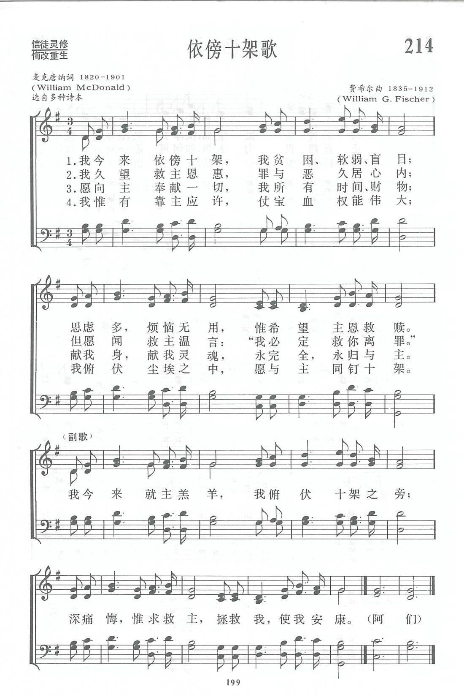

|
|
讚美詩(新編) |
|
1 I am coming to the cross; Refrain: 2 Long my heart has sighed for Thee; 3 Here I give my all to Thee, 4 In the promises I trust; 5 Jesus comes! He fills my soul! |
|
|
https://www.zanmeishige.com/tab/13887.html?songbook=1&index=214

|
|
|
|
|


https://youtu.be/9zje3EQQ8kM -
I Am Coming to the Cross a Holy Communion Song
https://youtu.be/5qY0vu-2zoY https://youtu.be/R-spm2ZH7uY
| Text: | I Am Coming to the Cross |
| Author: | William McDonald, 1820-1901 |
| Tune: | [I am coming to the cross] |
| Composer: | William G. Fischer, 1835-1912 |
| Short Name: | W. McDonald |
| Full Name: | McDonald, W. (William), 1820-1901 |
| Birth Year: | 1820 |
| Death Year: | 1901 |
McDonald, Rev. William. (Belmont, Maine, March 1, 1820--September 11, 1901, Monrovia, California). Becoming a local preacher in the Methodist Episcopal Church in 1839 he was admitted to the Maine Conference in 1843, being transferred to that of Wisconsin in 1855 and of New England in 1859. For a number of years he was editor of the Advocate of Christian Holiness. In addition to being a writer of biographies and religious books, he compiled, or assisted in compiling, a number of song books of the gospel song type, among them being the Western Minstrel (1840), Wesleyan Minstrel (1853), Beulah Songs (1870), Tribute of Praise (1874). This last book was that which had been compiled by McDonald and L.F. Snow, and re-edited by Eben Tourjée, appeared in 1882 as the official hymnal of the Methodist Protestant Church. From 1870 he spent many years in evangelistic work before his retirement to Monrovia.
Sources: Metcalf, Frank J., American Writers and Compilers of Sacred Music; Tillett, Wilbur F., Our Hymns and Their Authors; Nutter and Tillett, Hymns and Hymn Writers of the Church; McCutchan, Robert G., Our Hymnody; Benson, L.F., The English Hymn.
Tune Information
| Title: | [I am coming to the cross] (Fischer) |
| Composer: | William G. Fischer |
| Meter: | 7.7.7.7 |
| Incipit: | 51312 31345 65321 |
| Key: | G Major |
| Copyright: | Public Domain |
| Short Name: | William G. Fischer |
| Full Name: | Fischer, W. G. (William G.), 1835-1912 |
| Birth Year: | 1835 |
| Death Year: | 1912 |

In his youth, William G. Fischer (b. Baltimore, MD, 1835; d. Philadelphia, PA, 1912) developed an interest in music while attending singing schools. His career included working in the book bindery of J. B. Lippencott Publishing Company, teaching music at Girard College, and co-owning a piano business and music store–all in Philadelphia. Fischer eventually became a popular director of music at revival meetings and choral festivals. In 1876 he conducted a thousand-voice choir at the Dwight L. Moody/Ira D. Sankey revival meeting in Philadelphia. Fischer composed some two hundred tunes for Sunday school hymns and gospel songs.
Bert Polman
第214首 依傍十架歌 I am coming to the cross _W.McDonald
经文：“因为十字架的道理，在那灭亡的人为愚拙，在我们得救的人却为神的大能”(林前l：18)。
《依傍十架歌》是一首有名的救恩呼召圣诗，尽麦克唐纳(W.McDonald，1820—1901)于1870年任布鲁克林城美以美会牧师时写成的。他从实际牧养工作中，感到有必要写一首诗，来帮助到圣台前追求清心的人。
它以简洁的词句、柔和的呼声、感人的经历，号召所有来到主十字架前的人要认识自己的贫困、软弱、盲目而祈求主完全的救恩；要求信徒将自己与主同钉十字架，奉献身心灵魂永归于主。正因麦氏如此深刻了解信徒的灵性光景，所以在几分钟内就将诗写好。
自187O年这首诗流传于教会后，曾译成多国文字，成为世界上许多教会常唱的一首诗。麦克唐纳除担任牧师职务外，还主编《基督徒见证》刊物。晚年时感到美以美会不能满足他的灵性生活，乃组织一部分信徒，成立了通圣会①，要求遵守圣经有关圣洁的要求和更加严谨地按照卫斯理的规条以追求圣洁的生活。
他一生写过十本宗教书籍，七本教会使用的圣乐诗集。
这首诗所用的曲调是美国业余圣诗作曲家费希尔(W． G.Fischer，1835一1912)所谱，调名《信赖(TRUSTING)》。费希尔从青年时代起就对音乐感兴趣，曾在美国费城说德语的一座教堂里学唱诗；一度从事装订图书工作，并继续在夜校学音乐。他钢琴弹得很好，也指挥合唱团，并任钢琴商店的推销员。许多堂会请他教唱诗和指挥唱诗班。他一生谱写了2OO首福音圣诗曲调，《新编》里的第214、229、347三首曲调，都是他的不朽之作，流行甚广。
①通圣会：19世纪中叶，由美国卫理宗教会分出来的一个新教派，着重基督徒生活的完美、圣洁。它的特点是讲属灵而不跳灵舞，重圣洁而不尚狂热的灵恩。186O年成立美国全国性的组织，称通圣会(National或(General Holiness Association)。解放前在山东聊城地区有他们的传教活动.以后由该教派分出着重跳灵舞和说方言的五旬节教派或灵恩派。
"I AM COMING TO THE CROSS"
hymnstudiesblog
"…To cleanse us from all unrighteousness" (1 Jn. 1.8-9)
INTRO.:
A hymn which encourages people to respond to the Lord’s invitation that they might be cleansed from all unrighteousness is "I Am Coming to the Cross" (#635 in Sacred Selections for the Church). The text was written by William McDonald, who was born of Scottish descent at Belmont, ME, on Mar. 1, 1820. Becoming a local preacher in the Methodist Episcopal Church at age 19 in 1839, he joined the Maine Conference in 1843, transferred to the Wisconsin Conference in 1855, and returned to the New England Conference in 1859, serving as an evangelist in the National Holiness Conference. For fifteen years, he worked as editor of the Advocate of Christian Holiness magazine.
Also, McDonald authored some ten books, including religious treatises and biographies, and edited or co-edited seven collections of music, including Western Minstrels in 1840; Wesleyan Sacred Harp in 1854 or 1855, which first contained the tune attributed to Edward F. Rimbault that is commonly used with Philip Doddridge’s "O Happy Day; Beulah Songs in 1870; Tribute of Praise in 1874; and Songs of Joy and Gladness in 1885, which first contained the tune attributed to Asa Hull that is commonly used with Mary Dagworthy James’s hymn "All for Jesus." In 1870, McDonald was a minister in Brooklyn, NY, and felt the need of a hymn to aid seekers of purity, desiring something simple in expression, true to experience, and ending in the fullness of love. One day, as he was sitting in his office, a line of thought came rushing into his mind and he began to write.
In a few minutes the song was on paper, set to a tune (Trusting) that McDonald had seen and found appealing already composed in 1869 by William Gustavus Fischer (1835-1912). Fischer is well known for providing melodies for many beloved gospel songs, such as "Whiter Than Snow," "I Love to Tell The Story," and "The Rock That Is Higher Than I," although it is thought that the one McDonald chose may have been first used with a secular melody. "I Am Coming to the Cross" was first sung at a National Camp Meeting in Hamilton, MA, held on June 22, 1870. The song’s first hymnbook publication seems to have been in the American Baptist Praise Book of 1871, and it became quite popular after appearing in the 1872 edition of Joseph Hillman’s The Revivalist. Sometimes these are erroneously given as the dates for the song. McDonald died on Sept. 11, 1901, in Monrovia, CA.
Among hymnbooks published by members of the Lord’s church during the twentieth century for use in churches of Christ, "I Am Coming to the Cross," also known as "I Am Trusting, Lord, In Thee," appeared in the 1937 Great Songs of the Church No. 2 edited by E. L. Jorgenson; and the 1935 Christian Hymns (No. 1) and the 1948 Christian Hymns No. 2 both edited by L. O. Sanderson. Today it may be found in the 1971 Songs of the Church and the 1990 Songs of the Church 21st C. Ed. both edited by Alton H. Howard; and the 1992 Praise for the Lord edited by John P. Wiegand; in addition to Sacred Selections and the 2007 Sacred Songs of the Church edited by William D. Jeffcoat.
The song expresses the attitude needed by an individual coming to Christ for salvation.
I. Stanza 1 speaks about coming to the cross
"I am coming to the cross; I am poor and weak and blind.
I am counting all but dross; I shall full salvation find."
A. We do not literally come to the cross, but coming to the cross stands for
accepting the gospel since the preaching of the cross is the power of God unto
salvation: 1 Cor. 1.18
B. However, coming to the cross requires that we, like Paul, count all the
things of this life as loss (literally dung) for Christ: Phil. 3.4-7
C. In doing this, we can find full salvation, because Jesus is the author of
eternal salvation to all who obey Him: Heb. 5.8-9
II. Stanza 2 speaks about being cleansed from sin
"Long my heart has sighed for Thee; Long has evil reigned within;
Jesus sweetly speaks to me: ‘I will cleanse you from all sin.’"
A. The concept of the heart long sighing for the Lord may simply be thought to
express the idea that without God the soul is as a person who lacks water in a
dry and thirsty land: Ps. 63.1
B. The reason for this situation is that the sinner has allowed evil to reign
within: Rom. 6.12-16
C. However, Jesus gave Himself for us that we might be cleansed with the
washing of water by the word: Eph. 5.25-26
III. Stanza 3 speaks of giving our all to the Lord
"Here I give my all to Thee: Friends and time and earthly store;
Soul and body Thine to be, Wholly Thine forevermore."
A. Coming to the Lord means that we must deny self and take up the cross: Matt.
16.24
B. This requires that we give our all, including friends, time, and earthly
store, to Him and not allow them to stand between us and Him: Mk. 10.29-31
C. In this way, we commit ourselves, soul and body, to be wholly His
forevermore, to be kept against that day: 2 Tim. 1.12
IV. Stanza 4 speaks of trusting in His promises
"In the promises I trust; Now I feel the blood applied.
I am prostrate in the dust; I with Christ am crucified."
A. The Lord has given us many exceedingly great and precious promises in which
we can trust: 2 Pet. 1.3-4
B. When we trust in these promises, we can feel the blood (know based on the
teaching of God’s word that it is) applied: Eph. 1.3-7
C. However, again, to accomplish this we must have the attitude of one
prostrate in the dust and be crucified with Christ: Gal. 2.20
V. Stanza 5 speaks of accepting God’s grace (note: I have not been able to find
this stanza in any of the older hymnbooks that I have in my collection, only in
those published by members of the Lord’s church since Great
Songs of the Church No. 2. It is possible that this stanza was provided,
perhaps by E. L. Jorgenson, as a replacement for the original stanza 4 which
some might decide has too much of an "experience better felt than told" sound to
it)
"Gladly I accept Thy grace; Gladly I obey Thy word;
All Thy promises embrace, O my Savior and my Lord."
A. We must accept God’s grace because it is by grace that we are saved through
faith: Eph. 2.8-10
B. The means by which we do this is to obey God’s word, knowing that those who
do not obey the gospel will be punished with everlasting destruction: 2 Thess.
1.7-9
C. This is what is truly meant by confessing Jesus as our Savior and Lord: Rom.
10.9-10
VI. Stanza 6 speaks of being filled by Christ
"Jesus comes! He fills my soul! Perfected in Him I am;
I am every whit made whole. Glory, glory to the Lamb!"
A. Jesus’s coming and filling our soul simply represents His bestowing His
salvation and the fullness of life that He came to bring upon us as we submit to
Him: Jn. 1.14-16
B. As a result, we can be perfected and made whole in Him: 1 Pet. 5.10
C. Therefore, we should join with the saints above to give glory to the Lamb:
Rev. 5.8-10
CONCL.:
The chorus again emphasizes the attitude needed in seeking salvation:
"I am trusting, Lord, in Thee, Blessed Lamb of Calvary;
Humbly at Thy cross I bow. Save me, Jesus, save me now."
For reasons that I do not fully understand, most of our books, again after
Jorgenson’s Great
Songs No. 2, have changed the last line to "Seeking Thy salvation now." As
we preach the gospel to the lost, they need to understand that they will not be
saved by their own goodness or works but only by humbling themselves and saying,
"I Am Coming To The Cross."
https://hymnstudiesblog.wordpress.com/2008/06/27/quoti-am-coming-to-the-crossquot/
Words: William McDonald (b. Mar. 1, 1820; d. Sept. 11,
1901)
Music: William Gustavus Fischer (b. Oct. 14, 1835; d. Aug.
13, 1912)
Links:
Wordwise Hymns
The Cyber
Hymnal
Note: William McDonald was an American of Scottish descent who served as a preacher with the Methodist Episcopal Church, also doing a considerable amount of writing and editing. One day, on a sudden inspiration, he wrote a hymn suited to one seeking holiness. He tells us:
“The hymn was written in 1870 in the city of Brooklyn, New York, while I was pastor in that city. I had felt the need of a hymn to aid seekers of heart purity while at the altar. I had desired something, simple in expression, true to experience, and ending in the fullness of love.”
The song was sung for the first time at a National Camp Meeting, in Massachusetts, on June 22nd of that year, and published a couple of years later. Some versions include the refrain, as the Cyber Hymnal does. Others simply use some of the five original stanzas.
This hymn is rooted in a holiness teaching sometimes called the Second Blessing. Essentially, the idea is that the child of God needs to seek a second crisis experience after the new birth that will give him assurance of salvation, and power. Some even say this “second work of grace” completely eradicates the sinful flesh, resulting in the believer not sinning any more.
Though I know some of my readers adhere to this teaching, and I also have friends that do, I do not believe it is a biblical doctrine. Some have suffered discouragement and defeat in their Christian lives because they do not seem able to have the “experience” others insist they must have.
The truth of God’s Word is simply this:
¤ There is only one spiritual baptism (Eph. 4:4-5) which happens to all believers at the time of conversion. By it the Holy Spirit places us into Christ and unites us with His body, the church (I Cor. 12:13; Gal. 3:26-28). When a person has Christ, he has everything “in Christ” (Eph. 1:3; Col. 2:9-10). There is no “fuller” gospel than that!
¤ The filling of the Spirit (not to be confused with His baptizing work) is His fulfilling of God’s purpose in us by equipping us for life and service (Exod. 31:1-6; Lk. 4:1, 14; Acts 4:31; Eph. 5:18-19; cf. Col. 3:16, etc.). He does this as we walk in faith and obedience toward God. We can be filled (fulfilled) again and again, as needed.
God works in many creative ways in our lives. Whether a person has an unusual second experience (“blessing”) from God–or a third or a fourth–does not make it the norm for everyone. We must not insist others have the same experience we have had, unless God’s Word clearly teaches it is for all. These things being said, there is some merit in this hymn, even though we may disagree with some aspects of doctrine related to it.
If we take the words as describing an unsaved person seeking salvation, most of it makes sense, and has some biblical basis. The Lord invites individuals to come to Him and find rest. Jesus says, “Come unto Me, all you who labour and are heavy laden, and I will give you rest” (Matt. 11:28). But the Bible teaches that there is not, in the sinner’s heart, a natural desire to seek after God (Rom. 3:11).
It is a work of the Lord to awaken that longing and draw sinners to the Saviour, and He does (Jn. 6:37, 44). Yet the sad truth is there are some who hear the invitation, sense the convicting of the Spirit, and turn away. An Old Testament text puts it this way: “Thus says the Lord God…‘In returning and rest you shall be saved…but you would not’” (Isa. 30:15). However, for those who do come, there is cleansing from sin, soul refreshment, and rest.
CH-1) I am coming to the cross;
I am poor and weak and blind;
I am counting all but dross;
I shall full salvation find.
I am trusting, Lord, in Thee.
Blessèd Lamb of Calvary;
Humbly at Thy cross I bow.
Save me, Jesus, save me now.
CH-2) Long my heart has sighed for Thee;
Long has evil reigned within;
Jesus sweetly speaks to me:
“I will cleanse you from all sin.”
Questions:
1) What is your own understanding of the subject of holiness? (Do you
make a distinction between positional and progressive sanctification?)
2) Can you see a use for this song as an invitation hymn, applicable to a call to salvation?
Links:
Wordwise Hymns
The Cyber
Hymnal
https://wordwisehymns.com/2013/09/11/i-am-coming-to-the-cross/